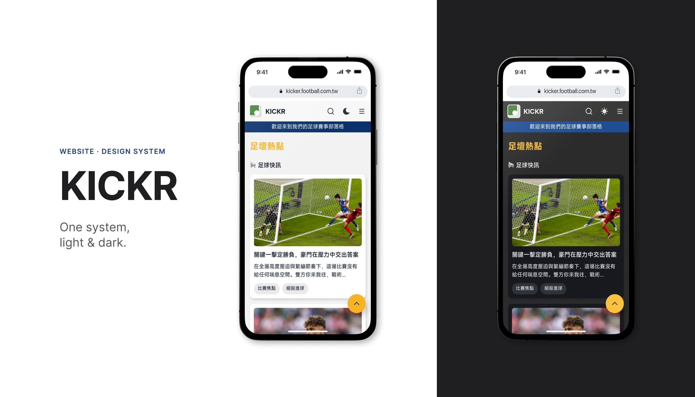
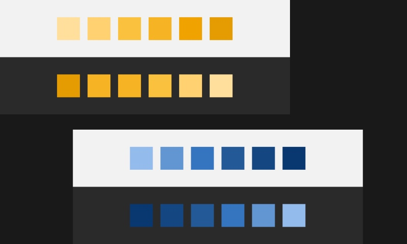
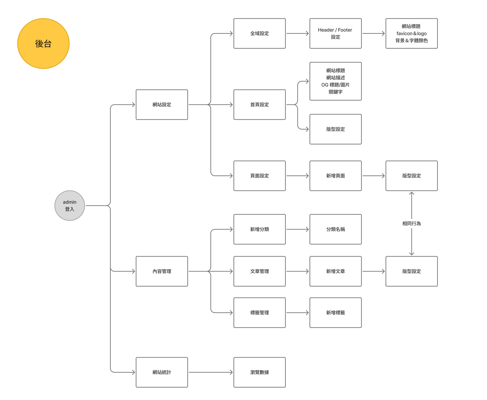

Aug 2025
KICKR: A Modular Football News Website
Project Overview
Outcome
With the modular design system built early on, the team extended the same design framework to two other types of websites — an e-commerce platform and a news site. Shared components and Figma Variables for managing visual modes cut duplicate design work and made the design more consistent and scalable.
My Role
I led early research, the overall UI/UX design and the design system. I also worked with engineers to test the AI-assisted back-office interface, reviewing content creation, block layout and publishing from a user’s perspective to improve the experience.
Challenge
Building one modular framework that serves both the reading experience and back-office content management. Beyond handling the hierarchy and frequent updates of football content, the layouts had to scale across page types and map cleanly to block-based management in the back office.
Team Goal
Build a football news website around a modular design system, connecting front-end presentation with block-based content management — so the framework can be reused, adjusted flexibly, and extended to other types of websites.
Design Process
- Requirements
The project balanced the front-end experience with a highly self-serve back office. We built a flexible management system so the client can easily update content and configure the site.
- Design
To make the site easier to maintain and scale, I used a modular approach — building block components that can be freely combined, so the client can create varied page layouts from the back office. Figma Variables power the light / dark mode switch, moving beyond typical sports-site visuals while keeping content immersive and readable in any lighting.
Design Approach
A team experiment exploring design systems and AI-assisted development, with football as the theme. With the brand’s future growth in mind, we took a block-based design approach.
1Modular by design, built to expand
A modular structure was the main design goal, so it could be quickly extended to other projects. Since those projects might be in different industries, we aimed for a neutral visual style that clients can adapt.
2A front end ready to launch
We analyzed other sports news websites to make sure the essential features and content structure were covered. The client wanted a fully functional, highly readable front end they could put into operation right away.
Design Execution


1Front End
The front end is designed mainly for reading on mobile. The home page is made of content blocks — such as Today’s Highlights, Player Spotlights, Hot Topics in Football, Trending and Football Trivia — and each maps to a block type in the back office (card list, article list, carousel), so the client can reorder and edit them as needed.
Article cards share one structure — image, title, summary and tags — keeping a consistent reading rhythm across blocks. Users can switch between light and dark mode from the top right anytime, and long pages have a back-to-top button for easy browsing.
2Back-Office Editor Logic
Beyond the front end, I helped improve the back-office workflow. Because the back office was built with AI assistance, its early flows didn’t always match real use. Starting from how content appears on the front end, I reviewed the back-office logic and reworked unintuitive steps, so managing content and seeing it on the site feel consistent and predictable.


Click an image to enlarge